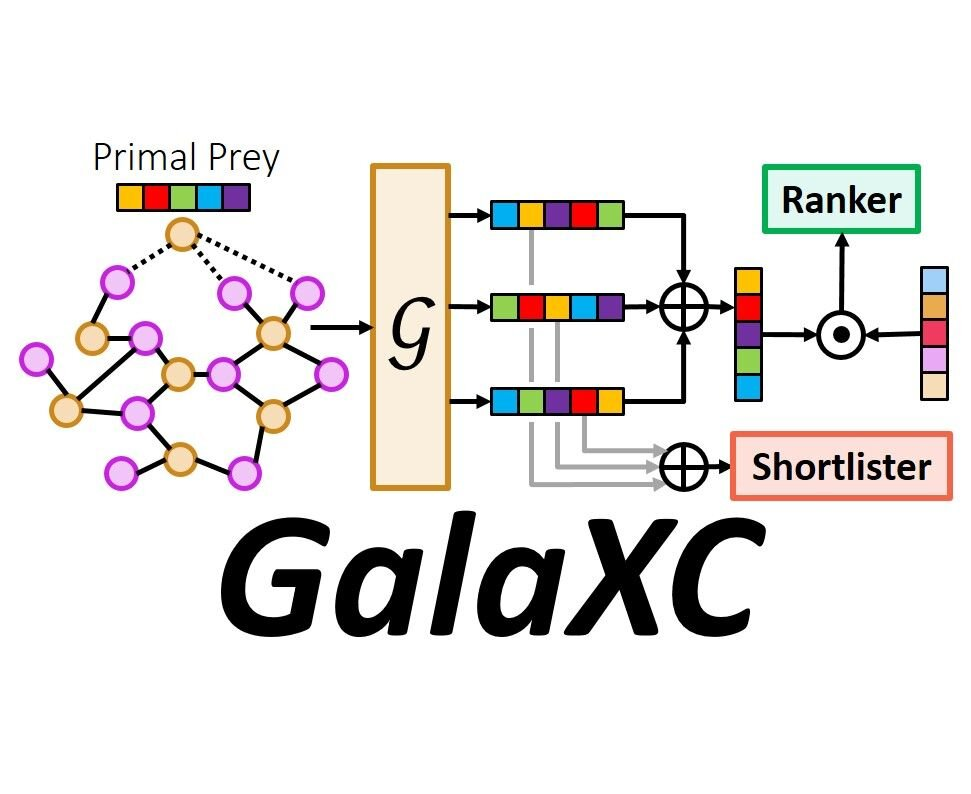
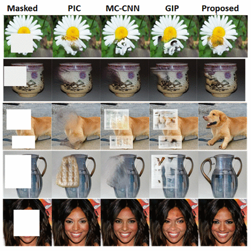

|
I am first year Ph.D. student at Université de Montréal and Mila under the supervision of Prof. Irina Rish. I am passionate about building agents that can efficiently explore the world and generalize to unseen tasks.
Previously, I was a Data & Applied Scientist at Microsoft, working on web-scale algorithms for ads recommendation. I was fortunate enough to collaborate with Dr. Manik Varma at Microsoft Research, India and worked on applications of Extreme Classification. Before that, I earned my Integrated M.Sc. in Mathematics and Computing from Indian Institute of Technology Kharagpur, where I had the pleasure of working with Prof. Pabitra Mitra, Prof. Jayanta MukhoPadhyay and Prof. Prabir Kumar Biswas. I also spent time in KRSSG working on path planning algorithms for autonomous soccer playing robots. |
| |
|  |
abstract /
bibtex /
pdf /
code
This paper develops the GalaXC algorithm for Extreme Classification, where the task is to annotate a document with the most relevant subset of labels from an extremely large label set. Extreme classification has been successfully applied to several real world web-scale applications such as web search, product recommendation, query rewriting, etc. GalaXC identifies two critical deficiencies in leading extreme classification algorithms. First, existing approaches generally assume that documents and labels reside in disjoint sets, even though in several applications, labels and documents cohabit the same space. Second, several approaches, albeit scalable, do not utilize various forms of metadata offered by applications, such as label text and label correlations. To remedy these, GalaXC presents a framework that enables collaborative learning over joint document-label graphs at massive scales, in a way that naturally allows various auxiliary sources of information, including label metadata, to be incorporated. GalaXC also introduces a novel label-wise attention mechanism to meld high-capacity extreme classifiers with its framework. An efficient end-to-end implementation of GalaXC is presented that could be trained on a dataset with 50M labels and 97M training documents in less than 100 hours on 4xV100 GPUs. This allowed GalaXC to not only scale to applications with several millions of labels, but also be up to 18% more accurate than leading deep extreme classifiers, while being upto 2-50x faster to train and 10x faster to predict on benchmark datasets. GalaXC is particularly well-suited to warm-start scenarios where predictions need to be made on data points with partially revealed label sets, and was found to be up to 25% more accurate than extreme classification algorithms specifically designed for warm start settings. In A/B tests conducted on the Bing search engine, GalaXC could improve the Click Yield (CY) and coverage by 1.52% and 1.11% respectively. Code for GalaXC is available at https://github.com/Extreme-classification/GalaXC.
@InProceedings{Saini21,
author = "Saini, D. and Jain, A.~K. and Dave, K. and
Jiao, J. and Singh, A. and Zhang, R. and Varma, M.",
title = "GalaXC: Graph neural networks with
labelwise attention for extreme classification",
booktitle = "Proceedings of The ACM International
World Wide Web Conference",
month = "April",
year = "2021",
}
|
|  |
abstract /
bibtex /
pdf /
slides
Contemporary deep learning based semantic inpainting can be approached from two directions. First, and the more explored, approach is to train an offline deep regression network over the masked pixels with an additional refinement by adversarial training. This approach requires a single feed-forward pass for inpainting at inference. Another promising, yet unexplored approach is to first train a generative model to map a latent prior distribution to natural image manifold and during inference time search for the `best-matching' prior to reconstruct the signal. The primary aversion towards the latter genre is due to its inference time iterative optimization and difficulty to scale to higher resolution. In this paper, going against the general trend, we focus on the second paradigm of inpainting and address both of its mentioned problems. Most importantly, we learn a data driven parametric network to directly predict a matching prior for a given masked image. This converts an iterative paradigm to a single feed forward inference pipeline with around 800x speedup. We also regularize our network with structural prior (computed from the masked image itself) which helps in better preservation of pose and size of the object to be inpainted. Moreover, to extend our model for sequence reconstruction, we propose a recurrent net based grouped latent prior learning. Finally, we leverage recent advancements in high resolution GAN training to scale our inpainting network to 256x256. Experiments (spanning across resolutions from 64x64 to 256x256) conducted on SVHN, Standford Cars, CelebA, CelebA-HQ and ImageNet image datasets, and FaceForensics video datasets reveal that we consistently improve upon contemporary benchmarks from both schools of approaches..
@inproceedings{lahiri2020prior,
title = {Prior Guided GAN Based Semantic Inpainting},
author = {Lahiri, Avisek and Jain, Arnav Kumar and Agrawal,
Sanskar and Mitra, Pabitra and Biswas, Prabir Kumar},
booktitle = {Proceedings of the IEEE/CVF Conference on Computer
Vision and Pattern Recognition},
pages = {13696--13705},
year = {2020}
}
|
|
abstract /
bibtex /
pdf
In this paper, we propose to improve the inference speed and visual quality of contemporary baseline of Generative Adversarial Networks (GAN) based unsupervised semantic inpainting. This is made possible with better initialization of the core iterative optimization involved in the framework. To our best knowledge, this is also the first attempt of GAN based video inpainting with consideration to temporal cues. On single image inpainting, we achieve about 4.5-5x speedup and 80x on videos compared to baseline. Simultaneously, our method has better spatial and temporal reconstruction qualities as found on three image and one video dataset..
@inproceedings{lahiri2019faster,
title = {Faster Unsupervised Semantic Inpainting:
A GAN Based Approach},
author ={Lahiri, Avisek and Jain, Arnav Kumar and Nadendla,
Divyasri and Biswas, Prabir Kumar},
booktitle = {2019 IEEE International Conference on Image
Processing (ICIP)},
pages = {2706--2710},
year = {2019},
organization = {IEEE}
}
|
|
|
abstract /
bibtex /
pdf
We integrate learning and motion planning for soccer playing differential drive robots using Bayesian optimisation. Trajectories generated using end-slope cubic Bézier splines are first optimised globally through Bayesian optimisation for a set of candidate points with obstacles. The optimised trajectories along with robot and obstacle positions and velocities are stored in a database. The closest planning situation is identified from the database using k-Nearest Neighbour approach. It is further optimised online through reuse of prior information from previously optimised trajectory. Our approach reduces computation time of trajectory optimisation considerably. Velocity profiling generates velocities consistent with robot kinodynamoic constraints, and avoids collision and slipping. Extensive testing is done on developed simulator as well as on physical differential drive robots. Our method shows marked improvements in mitigating tracking error, and reducing traversal and computational time over competing techniques under the constraints of performing tasks in real time..
@inproceedings{agarwalla2018bayesian,
title = {Bayesian optimisation with prior reuse
for motion planning in robot soccer},
author = {Agarwalla, Abhinav and Jain, Arnav Kumar
and Manohar, KV and Saxena, Arpit Tarang and
Mukhopadhyay, Jayanta},
booktitle = {Proceedings of the ACM India Joint
International Conference on Data Science and
Management of Data},
pages = {88--97},
year = {2018}
}
|
|
|
abstract /
bibtex /
pdf
Deep Neural Network architectures with external memory components allow the model to perform inference and capture long term dependencies by storing information explicitly. In this paper, we generalize Key-Value Memory Networks to a multimodal setting and introduce a novel key-addressing mechanism to deal with sequence-to-sequence models.
@inproceedings{jain2017recurrent,
title = {Recurrent Memory Addressing for Describing Videos.},
author = {Jain, Arnav Kumar and Agarwalla, Abhinav and
Agrawal, Kumar Krishna and Mitra, Pabitra},
booktitle = {CVPR Workshops},
volume = {7},
year = {2017}
}
|